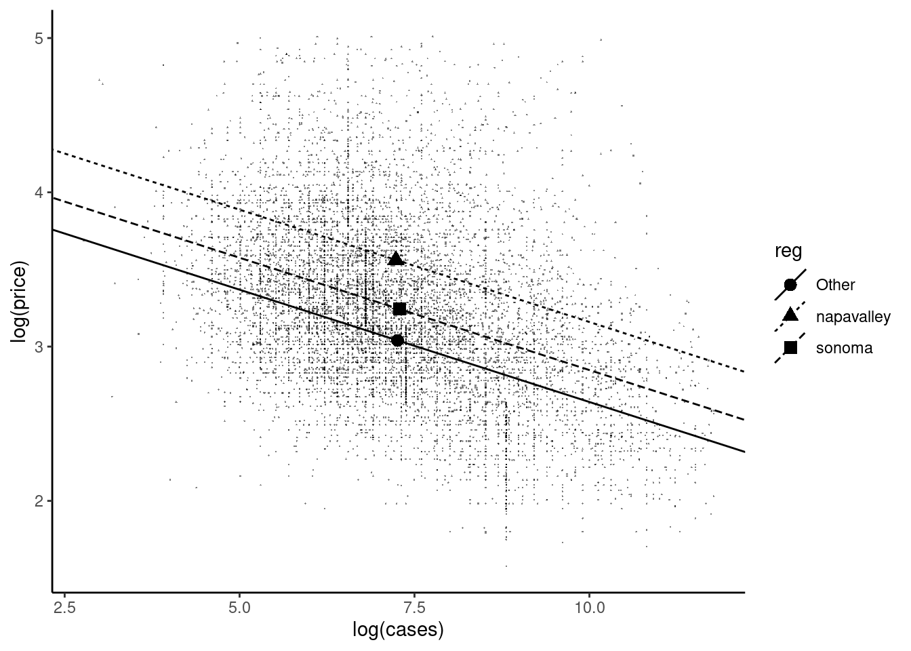

In the simplest model, a regression with a real numerical response and a real numerical covariate: \(y_n = \alpha + \beta x_n + \epsilon_n\); the interpretation of \(\beta\) is simply the constant marginal effect of \(x_n\) on \(y_n\) or, mathematically, the derivative of \(y\) with respect to \(x\). However, linear models are much richer than this simple one, as some covariates may be:
integer and not real (e.g., the number of children),
dummy variables (e.g., 0 for a male and 1 for a female),
categorical variables (e.g., marital status, with modalities married, single, divorced, widower),
introduced in the regression after a transformation, for example, by taking the logarithm or the square root (this can be also true for the response),
introduced as a polynomial, for example, not only \(x\) is introduced, but also its square,
jointly introduced with an interaction, i.e., not only \(x_1\) and \(x_2\) are introduced, but also their product.
In all these cases, \(\beta\) is no longer the derivative of \(y\) with respect to \(x\) and special care is required in the interpretation of the estimated coefficients. Throughout this chapter, we’ll use the data set of Costanigro, Mittelhammer, and McCluskey (2009) (called wine) who estimate a hedonic price function for wines.
# A tibble: 9,600 × 11
price cases score age region variety vintage reserve vineyard
<dbl> <int> <int> <int> <fct> <fct> <fct> <fct> <fct>
1 27.1 300 86 3 sonoma pinot 95 no no
2 32.1 500 90 3 mendocino cabern… 97 yes no
3 25.5 1635 84 2 mendocino pinot other no no
# ℹ 9,597 more rows
# ℹ 2 more variables: estate <fct>, class <fct>
The data set contains 9600 wines, for which one observes:
price: the price in US$ of 2000 per bottle,
cases: the production in number of cases, a case containing 12 bottles of 75 cl,
region: the region where the wine comes from,
vineyard: equal to "yes" if vineyard information is provided and "no" otherwise,
age: the age of the wine in years, which is an integer, from 1 to 6,
score: the score given by the Wine Spectator magazine, between 0 and 100.
We divide the score by 100 so that the maximum attainable score is 1:
wine<-wine%>%mutate(score =score/100)
Section 4.1 deals with numerical covariates and Section 4.2 with categorical covariates. Section 4.3 introduces interactions between several covariates. Finally, Section 4.4 presents useful tools to compute marginal effects.
4.1 Numerical covariate
We first consider the production as the unique covariate. High quality wines are often produced in small areas, with a low yield; we therefore expect a negative relationship between price and production. We consider two measures of production and price:
production is measured in cases (\(x\)) and in m3 (\(w\)). A case contains 12 bottles of 75 cl, or 9 liters, which is also \(9/1000\) m3. Therefore, the number of cases must be multiplied by \(0.009\) in order to get the production in m3 (\(w = 0.009x\)),
price (\(y\)) is measured in US$ of 2000 per bottle. The price index in the United States was equal to 172 in 2000 and to 258 in 2020. Therefore, to get the price in US$ of 2020 (\(q\)), we have to multiply the price in US$ of 2000 by \(258/172 = 1.5\) (\(q = 1.5 y\)).
We perform these transformations, and we select only the relevant variables:
wine2<-wine%>%select(x =cases, y =price)%>%mutate(w =x*0.009, q =y*1.5)
Response and covariate in level
We start by a set of simple linear regressions of \(y\) / \(q\) on \(x\) / \(w\):
nn_yx<-lm(y~x, wine2)nn_yw<-lm(y~w, wine2)nn_qx<-lm(q~x, wine2)nn_qw<-lm(q~w, wine2)nn_yx%>%coef## (Intercept) x ## 31.7118276 -0.0003312
The initial model, with \(y\) and \(x\) is: \(y_n = \alpha + \beta_x x_n + \epsilon_n\). \(y\) being measured in US$ of 2000, so are \(\alpha\), \(\beta x_n\) and \(\epsilon_n\). The intercept indicates the expected value of a bottle of wine when the production is 0, which of course makes no sense. However, we can consider the intercept as the expected value of a bottle for a wine with a very low production. We get here: 31.7. \(\beta_x x\) is measured in US$ of 2000 and \(x\) in cases, \(\beta_x\) is measured in US$ of 2000 per case. Therefore, when the production increases by one case, the price of a bottle decreases by -3.3^{-4} US$ of 2000, i.e., 0.03 cent. The residuals and the fitted values are also measured in US$ of 2000. To see the response, the fitted values and the residuals, we can create a tibble, using the resid and the fitted functions:
tibble(y =wine2$y, heps =resid(nn_yx), hy =fitted(nn_yx))
or more simply using the broom::augment function, which adds to the model frame of a fitted object different columns, including the residuals (.resid) and the fitted values (.fitted):
For example, for the first wine in the sample, the observed price is $27.1 and is the sum of:
the prediction of the model, i.e., the estimation of the expected value of a bottle for this level of production: 31.6,
the residual, i.e., the difference between the actual and the predicted price, which is negative for the first bottle (\(-4.49\)).
We now measure the price in US$ of 2020. This means that the unit of measurement of the response, as well as that of \(\alpha\), \(\beta_x x_n\) and \(\epsilon_n\) is changed. More precisely, all these values are multiplied by 1.5. \(\beta_x x_n\) is multiplied by 1.5, but as \(x_n\) is unchanged, \(\beta_x\) is multiplied by 1.5.
For example, the price of the first bottle is lower than the estimated expected value for this given level of production by an amount of \(-6.74\) US$ of 2020, which is 1.5 times the residual of the initial regression (\(-4.49\)).
Consider now that the production is measured in m3 and the price in US$ of 2000. The reference model can in this case be rewritten as:
\[
y_n = \alpha + \beta_x (w_n / 0.009) + \epsilon_n = \alpha + (\beta_x / 0.009) w_n + \epsilon_n =
\alpha + \beta_w w_n + \epsilon_n
\] Compared to the reference model, the three elements of the model are still measured in US$ of 2000, and it is particularly the case for \(\beta_w w_n\). As the production is now measured in m3, it has been multiplied by 0.009, and therefore, the slope is divided by the same amount. The intercept, the predictions and the residuals still have the same unit of measurement (US$ of 2000) and therefore the same values.
nn_yw<-lm(y~w, wine2)coef(nn_yw)## (Intercept) w ## 31.71183 -0.03681coef(nn_yx)/coef(nn_yw)## (Intercept) x ## 1.000 0.009
The price of a bottle of very rare wine is still 31.7 US$ of 2000, and the slope now indicates that when the production increases by 1 m3, the price of a bottle decreases by \(-0.037\), which is approximately 4 cents.
Covariate in logarithm
We now consider that the covariate is the logarithm of the production: \(y_n = \alpha + \beta_x \ln x_n + \epsilon_n\). The response is still measured in US$ of 2000, and therefore so are \(\alpha\), \(\beta_x \ln x_n\), \(\epsilon_n\), \(\hat{y}_n\) and \(\hat{\epsilon}_n\).
The intercept is now the expected value of the price of a bottle for \(x=1\) (and not 0 as previously) and is therefore not particularly meaningful. \(\beta_x\) is now the derivative of \(y\) with \(\ln x\), which is \(\beta_x = \frac{dy}{d\ln x}= \frac{dy}{dx /x}\). Therefore, \(\beta_x\) is the ratio of an absolute variation of \(y\) and a relative variation of \(x\). For \(dx/x=1\), which means that the production is multiplied by 2, \(dy = -3.71\), which means that the price of the bottle decreases by -3.71 US$ of 2000.
With this new specification, for the first bottle, the price is lower than the expected value of the price by an amount of \(-8.74\). If the production is measured in m3, we get, replacing \(x_n\) by \(w_n / 0.009\):
Therefore, the slope is unchanged because it measures the effect of doubling the production on the price, which obviously doesn’t depend on the unit of measurement of the production. The intercept is modified by an amount equal to \(-\beta_x\ln 0.009\):
Consider now the case when the response is in logarithm. In terms of the response, we then start from a multiplicative model:
\[
y_n = e^{\alpha + \beta_x x} (1 + \eta_n)
\] where \(\eta_n\) is a multiplicative error. For example, if \(\eta_n=-0.2\), it means that for the given wine, the price is 20% lower than the expected value for this level of production. Taking logs, we get:
The error term is now \(\epsilon = \ln(1 + \eta_n)\). But, if \(\eta_n\) is “small”: \(\ln(1+\eta_n) \approx \eta_n\). For example, \(\ln(1 + 0.05) = 0.049\) and \(\ln(1 - 0.10) = -0.105\). Therefore, \(\epsilon\) can be interpreted as a percentage of variation between the actual price and the expected value for the given level of production.
ln_yx=lm(log(y)~x, wine2)coef(ln_yx)## (Intercept) x ## 3.3076419 -0.0000138
The intercept is now the expected value of \(\ln y\) when \(x = 0\). Taking the exponential of the intercept, we get:
which is quite close to the value obtained in the reference model (31.71). \(\beta_x\) is now the derivative of \(\ln y\) with \(x\):
\[
\frac{d \ln y}{d x} = \frac{dy / y}{d x}
\]
It is therefore the ratio of a relative variation of \(y\) and an absolute variation of \(x\). The results indicate that when the production increases by one case, the relative variation of the price is -10^{-5}, i.e., approximately \(0.001\)%. Consider now the production in m3:
The only effect of this change of measurement for the covariate is that, as the covariate is multiplied by \(0.009\), \(\beta_x\) is divided by the same amount:
ln_yw=lm(log(y)~w, wine2)coef(ln_yw)## (Intercept) w ## 3.307642 -0.001533coef(ln_yx)/coef(ln_yw)## (Intercept) x ## 1.000 0.009
the intercept, the fitted values and the residuals being unchanged. If the response is measured in US$ of 2020, starting from the initial model, we have:
When \(dx / x = 1\), which means that the production is doubling, the relative variation of the price is \(-0.147\) or \(-14.7\)%. Equivalently, when the production increases by 1%, the price decreases by \(-0.147\)%; \(\beta_x\) is an elasticity and is a number without unit. Therefore, it is invariant to any linear transformation of the covariate or of the response.
Consider the same model: \(y_n = \alpha + \beta_x x_n + \epsilon_n\), but \(x_n\) is now an integer. In the wine data set, age is the age of the wine in years, from 1 to 6.
lm(price~age, wine)%>%coef## (Intercept) age ## 9.910 7.288
\(\beta\) is still the derivative of \(y\) with \(x\), but the computation of the derivative makes little sense when \(x\) is an integer, as infinitesimal variations are not relevant in this case. Therefore, instead of a marginal effect, one is interested in a discrete variation of \(x_n\) (for example from 3 to 4). If we compute the variation of \(\mbox{E}(y \mid x = x_n)\) when \(x\) increases from \(x_n\) to \(x_n + 1\), we get:
Therefore, \(\beta_x\) is not only the derivative, but it is also the variation of \(y\) caused by an increase of one unit of \(x\). In our example, when the age of the wine increases by one year, its expected price increases by $7.3.
4.2 Categorical covariate
A categorical variable is a variable that defines a set of modalities, each observations belonging to one modality and only one. The preferred way to deal with categorical variables with R is to use a variable type that is called factor, the modalities being called levels. Factors have at least two levels. A categorical variable with two levels is a dichotomic variable, and the factor can be replaced by a dummy variable (a numerical variable for which the only two values are 0 and 1). For example, sex can be stored as a factor with levels male and female, or as a dummy variable with for example 1 for females and 0 for males. When the number of levels is greater than 2, the variable is polytomic, and it is advisable to store the variable as a factor. Base R proposed several functions to deal with factors, but we’ll use the forcats packages which is part of the tidyverse.
Dichotomic variable
We consider here the "vineyard" variable which has two modalities ("yes" and "no"), and we create a variant of this variable by creating a dummy variable equal to \(1\) if vineyard is equal to "yes" and 0 otherwise:
We first compute the average price for the two categories:
Mwine<-wine%>%group_by(vineyard)%>%summarise(price =mean(price))Mwine## # A tibble: 2 × 2## vineyard price## <fct> <dbl>## 1 no 28.9## 2 yes 34.9
The average price difference between the two categories is substantial ($5.97). We now consider the estimation of the linear model, with \(x_n\) a dummy variable equal to 1 if the wine has vineyard indications. The effect of \(x_n\) varying from 0 to 1 on the conditional expectation of the price is:
\[
(\alpha + \beta_x \times 1) - (\alpha + \beta_x \times 0) = \beta_x
\] We then estimate the linear model, using vineyard and vyd:
The intercept is the average price for wines with no vineyard indication, and \(\beta_x\) is the price increase caused by vineyard indication. Note also that \(\alpha + \beta_x\) is the average price for wines with a vineyard indication. Identical results are obtained using either vyd and vineyard. The difference is that in the first case, vyd is directly used in the regression. In the second case, the factor vineyard is replaced in the regression by a dummy variable called vineyardyes equal to 1 when vineyard equals "yes".
Two dummies are created, one for vineyard = "yes" as previously done, but also one for vineyard = "no". The two coefficients are now average prices for the two categories.
Response in log
Consider now a regression with the response in log and a dummy covariate: \(\ln y_n = \alpha + \beta_x x_n + \epsilon_n\). Consider two wines with the same value of \(\epsilon\), but one with \(x = 1\) and the other with \(x = 0\), and call \(y^1\) and \(y^0\) the respective prices. The difference in log price is:
\[
\ln y^1 - \ln y^0 = \beta_x
\]
Denoting \(\tau_x = \frac{y^1 - y^0}{y^0}\) the variation rate of the price for a wine with vineyard indication compared to a wine without vineyard indication, we get:
\(\beta_x\) is therefore equal to \(\ln (1 + \tau)\) and, as seen previously, for a “small” value of \(\tau_x\), \(\ln (1 + \tau_x) \approx \tau_x\). Therefore, \(\beta_x\) is approximately the relative price difference for a wine with and without vineyard indications.
\(\hat{\beta}_x=0.25\) is the approximation of the relative difference (25%), as the true relative difference is given by the formula: \(\tau = e^{\beta_x}-1\), which is 0.28. Therefore, \(\hat{\beta}_x\) gives quite a good approximation of the relative difference.
Polytomic covariate
Consider now the case of a polytomic covariate. region is a factor with numerous modalities:
To simplify, we keep only the two most important regions (Napa Valley and Sonoma) and merge all the other regions in a other category. This operation is easily performed using the forcats::fct_lump function:
Without an intercept, three dummy variables are created and introduced in the regression. With an intercept, only two dummy variables are introduced. We have noted previously that the three levels are napavalley, sonoma and Other. The name of the dummy variables are obtained by merging the name of the variable reg and the name of the level. Note that when an intercept is introduced, the dummy variable corresponding to the first level (here napavalley) is omitted. Without an intercept, the three estimated coefficients are simply the average prices for the three regions. With an intercept, the intercept is the average price for the first level of the variable (the Napa Valley region) and the two other coefficients are the differences between the average price for the two regions and the average price for the reference region (Napa Valley). For example, using the second regression (lin_2), the average price for the Sonoma region can be computed as the sum of the first two coefficients:
The reference level can be changed by modifying the order of the levels of the factor. This task can easily be performed using the forcats::fct_relevel function and indicating, for example, that "Other" should be the first level:
The average price for Sonoma is now equal to the sum of the first coefficient (the intercept which is the average price for “other regions”) and the third coefficient (the difference between the average price in Sonoma and “other regions”):
By definition, taking the exponential of the mean of the logs, we get the geometric mean of prices, which is always lower than the arithmetic mean. Estimating the model without intercept:
we get a model with a coefficient for the three regions. Taking the exponential of these coefficients, we get the geometric means of price previously computed for the three regions. Adding an intercept, only two dummies are introduced in the regression:
The intercept is the mean of the logarithms of the prices for the reference region. The coefficient for the Napa Valley region is the difference of mean log prices for the Napa Valley and “other regions”.
\[
\beta^s = \ln y^s_n - \ln y^o_n = \ln \frac{y^s_n}{y^o_n} = \ln (1 +
\tau_{s}) \approx \tau_{s}
\] where \(\tau_{s}\) is the relative price difference between Sonoma and “other regions”. \(\beta^s\) is an approximation of \(\tau_{s}\). The coefficient is 0.52 (or 52%) as the exact formula for \(\tau\) gives 0.69 (or 69%). The approximation in this example is quite bad, because the value of \(\hat{\beta}^s\) is high.
4.3 Several covariates
Most of the time, the model of interest includes several numerical and/or categorical covariates. A first step is to introduce these covariates separately, so that their linear effect is analyzed. But it is also sometimes interesting to introduce the product of two covariates in the regression. This enables to analyze the interaction effect of two covariates, i.e., the fact that the effect of \(x_1\) on \(y\) depends on the value of \(x_2\).
Separate effects
Consider the log-log model with the numerical cases covariate and add the reg categorical variable. We use the + operator in the formula to separate these two covariates:
From previous subsections, we are able to interpret the results:
a 1% increase in production leads to a decrease of \(-0.15\)% in price,
wine produced in Napa Valley and Sonoma are more expensive than wine produced in other regions (by an amount approximately equal to 51.9% and 20.7%).
This model is represented in Figure 4.1. The slope is the same for the three regions, but the intercept is different. Therefore, the fitted model is represented by three parallel lines. Note that the sample mean for each region, depicted by a large point, is part of the corresponding regression line.

Figure 4.1: Additive effects of production and region
Multiplicative effects
A multiplicative effect is obtained by introducing in the regression the product of two covariates. Consider first the case where the two covariates are numeric; we’ll consider as an example the production in m3 (prodcubm) and score. The product can be computed before the estimation:
Note the use of the I function in the formula; arithmetic operators (+, -, *, : and /) have a special meaning in formulas and therefore they should be “protected” in order to perform the usual arithmetic operation. The last (and best solution) is to use the formula syntax: x_1:x_2 introduces the interaction effect between x_1 and x_2, i.e., their product:
This model is of the form: \(y_n = \alpha + \beta x_1 x_2 + \epsilon_n\). Therefore, the marginal effect of \(x_1\) is \(\beta x_2\) and the one of \(x_2\) is \(\beta x_1\), which is difficult to justify. When one wants to introduce interaction effects, it’s recommended to introduce them with the additive effects. This can be performed using any of the following commands:
the last expression uses the formula syntax, i.e., use + and :. However, introducing the additive and the interacting effect is a very common task, so that the * operator is devoted to this task:
This model is now of the form: \(y_n = \alpha + \beta_1 x_{n1} + \beta_2 x_{n2} + \beta_{12} x_{n1}x_{n2}\epsilon_n\) and the marginal effect for \(x_1\) is now \(\beta_1 + \beta_{12} x_{n2}\). This model has as a special case the additive model (\(\beta_{12} = 0\)) and this hypothesis can be tested, which was not the case for the model with only the interaction between the two covariates. The marginal effect of one more m3 of production is (denoting \(x_2\) the score): \(0.149 - 0.207 x_2\) and is therefore a decreasing function of the score. Note that the coefficient of prodcubm (\(0.149\)) can be misleading. It indicates that, for a wine with a score equal to 0, the price increases with the production. But actually, such low scores are not observed, the lowest in the sample being 0.68 and for this value, the marginal effect of production is \(0.149 - 0.207 \times 0.68 = 0.01\). The marginal effect of production has the expected negative sign for \(x_2 > 0.149 / 0.207 = 0.72\), which is the case for 9560 wines out of 9580 in the sample. Therefore, the model predicts a negative marginal effect of the production on the price of a bottle for almost the whole sample, and this negative effect increases with the score obtained by the wine. We can easily test the hypothesis that the additive model is relevant using the value of the Student statistic for the interaction term:
coef(summary(z))[4, ]## Estimate Std. Error t value Pr(>|t|) ## -2.066e-01 4.972e-02 -4.155e+00 3.283e-05
which indicates that the interaction term is highly significant. For a model with the production and the age as covariates, we have:
z<-lm(price~prodcubm*age, wine)coef(summary(z))[4, ]## Estimate Std. Error t value Pr(>|t|) ## 4.489e-05 2.837e-03 1.582e-02 9.874e-01
and this time, the interaction term is not significant and the additive model should be favored.
Polynomials
Until now, we have introduced the numerical covariates either in level or in log. In both cases, a unique coefficient \(\hat{\beta}\) is estimated and the marginal effect of the covariate on the response is necessarily monotonic, which is not in practice always a relevant feature. For example, in a famous article, Kuznets (1955) analyzed the relation between economic development and inequality and his analysis has been formalized by Robinson (1976). A dual economy is considered, with a rural and an urban sector. In the rural sector, income is low and exhibits little variations as, in the urban sector, income is high and exhibits high variations. Denoting \(\mu_r\) and \(\mu_u\) the mean log-income in the rural and the urban sector and \(\sigma_r ^ 2\) and \(\sigma_u ^ 2\) the variance of log-income, it is therefore assumed that \(\mu_r < \mu_u\) and \(\sigma_r ^ 2 < \sigma_u ^ 2\). \(x\) is the share of the urban sector and, during the process of development, \(x\) increases. The mean log-income for the whole economy is: \[
\mu = (1 - x) \mu_r + x \mu_u = \mu_r + x (\mu_u - \mu_r)
\tag{4.1}\]
As \(\mu_u > \mu_r\), mean log-income increases during the process of development. To get the variance of log-income for the whole economy, which is a measure of inequality, we apply the variance decomposition formula \[
\sigma^2 = (1 - x) \sigma_r ^ 2 + x \sigma_u ^ 2 + (1-x)(\mu_r - \mu) ^ 2 + x(\mu_u - \mu) ^ 2
\tag{4.2}\]
Replacing \(\mu\) by its expression in Equation 4.1 and denoting \(\Delta_\mu = \mu_u - \mu_r\) and \(\Delta_{\sigma^2} = \sigma_u ^ 2 - \sigma_r ^ 2\), Equation 4.2 can be rewritten as:
\[
\sigma^2 = \sigma_r ^ 2 + (\Delta_{\sigma^2} + \Delta_\mu^2) x - \Delta_\mu ^ 2 x ^ 2
\] Therefore, the overall variance of log-income is the equation of a parabola with a positive first order term and a negative second order term. Graphically, the relation between the share of the modern sector and the overall variance of log-income is inverted U-shaped. From Equation 4.1, the mean of log income is positively correlated with the share of the urban sector. The relation between the variance and the mean of log-income is therefore also inverted U-shaped, and is called in the economic literature the Kuznets curve. We use the kuznets data set, which is used by Sudhir and Kanbur (1993):
kuznets
# A tibble: 60 × 5
country group gnp gini varlog
<chr> <fct> <dbl> <dbl> <dbl>
1 Chad developing 79.5 0.369 0.368
2 Malawi developing 80 0.470 0.576
3 Dahomey developing 91.3 0.468 0.594
4 Pakistan developing 93.7 0.386 0.468
5 Tanzania developing 104. 0.503 0.661
# ℹ 55 more rows
It contains data for 60 countries in the sixties; group categorizes developing, developed and socialist countries, gnp is the per capita gross national product in US$ of 1970, gini is the Gini index of inequality and varlog is the variance of the log-income. Figure 4.2 presents the relationship between log-income and inequality, the fitting line being a second-order polynomial. To perform the regression, log(gnp) and its square can be computed before the estimation or “on the fly” in the formula:
or more simply (especially if the order of the polynomial is high), using the poly function, which returns a matrix with a number of columns equal to the order of the polynomial:
By default, orthogonal polynomials are computed, i.e., polynomials for which all the inner products of the different terms are 0. Moreover, all the terms have a zero mean and a unit variance. “Raw” polynomials can be computed by setting the raw argument to TRUE. Using raw or orthogonal polynomials gives of course different coefficients, but the same fitted values and residuals. The poly function can be used inside a formula, so that the Kuznets model can be estimated using:
kc<-lm(varlog~poly(lgnp, 2, raw =TRUE), kuznets)kc%>%coef%>%unname## [1] -1.99919 0.92973 -0.07577
The results validate the Kuznets hypothesis, i.e., per capital income have first a positive, and then a negative effect on inequality. Denoting \(\beta_1\) and \(\beta_2\) the coefficients of log-income and its square, the summit of the curve is given by \(\ln \mbox{gnp} = -\beta_1 / (2 \beta_2) = 6.14\), that corresponds to a per capita GNP equal to 462, which is very close to the median per capita income in the sample.
Using orthogonal polynomials, the covariance matrix of the estimators is now diagonal, but we get the same residuals and the same fitted values as previously:
Until now, we have interpreted the coefficients in a linear model. However, except in the case where the covariate is in level, the coefficients are different from the marginal effects. For example, in a model with:
the covariate in log: \(y_n = \alpha + \beta \ln x + \epsilon_n\), the marginal effect is \(d y_n / d x_n = \beta / x_n\),
the covariate introduced as a second degree polynomial: \(y_n = \alpha + \beta_1 x + \beta_2 x ^ 2\), the marginal effect is \(d y_n / dx_n = \beta_1 + 2 \beta_2 x\).
Therefore, the marginal effect of \(x\) on \(y\) depends on the value of \(x\) and is therefore different from one observation to another. Moreover, the standard error of the marginal effect will also depend on the value of \(x\). There are several R packages which enable the automatic computation of marginal effects. We’ll present in this section the marginaleffects package (see Arel-Bundock 2023) which provides a very rich set of analytical and graphical tools to compute and analyze marginal effects.
Computation of the marginal effects with one covariate
Denote \(m(\gamma, x_n) = d y / d x (\gamma, x_n)\). Until now, we have considered models which are linear in the parameters and are therefore of the form:
\[
y_n = \alpha + \sum_{k=1}^K \beta_kf_k(x_n)
\]
The marginal effect of a given covariate \(l\) is then: \(m_l(\beta, x_n) = \sum_k \beta_k \frac{\partial f_k}{\partial x_{nl}}(x_n)\) and the fitted marginal effect is \(\sum_k \hat{\beta}_k \frac{\partial f_k}{\partial x_{nl}}(x_n)\). Its variance is then a function of the matrix of covariance of the coefficients and of the partial derivatives of \(f_k\) with respect to \(x_{nl}\). Consider as an example the Kuznets curve: \(y_n = \alpha + \beta_1 \ln x_n + \beta_2 \ln^2 x_n\). The estimated marginal effect of the unique covariate is \(\hat{\beta}_1 / x_n + 2\hat{\beta}_2 \ln x_n / x_n\). It is therefore of the form \(a \hat{\beta}_1 + b \hat{\beta}_2\), for which the variance is: \(a^2\sigma_{\hat{\beta}_1}^2 + b^2\sigma_{\hat{\beta}_1}^2 + 2 ab\sigma_{\hat{\beta}_1\hat{\beta}_2}\). Therefore, for the Kuznets model, the variance of the marginal effect of per capita GNP is:
\[
\left(1 / x_n\right)^2 \sigma_{\beta_1} ^ 2 + \left(2\ln(x_n)/x_n\right) ^ 2 \sigma_{\beta_2}^2+ 2 \times \left(1 / x_n\right)\left(2\ln(x_n)/x_n\right) \sigma_{\beta_1\beta_2}
\] We first fit the Kuznets curve equation, and note that we use log(gnp) and not lgnp in the formula:
kc<-lm(varlog~poly(log(gnp), 2, raw =TRUE), kuznets)kc%>%coef%>%unname## [1] -1.99919 0.92973 -0.07577
Applying the preceding formulas, we compute the marginal effect and its standard error for each observation:
# A tibble: 3 × 2
me sd
<dbl> <dbl>
1 0.00335 0.00201
2 0.00332 0.00199
3 0.00269 0.00164
The marginaleffects package provides the slopes function to compute the marginal effects and their standard error for all the observations in the sample. It has a variables argument that is a character vector containing the variables for which the marginal effect has to be computed. It is unnecessary here, as we have only one covariate:1
We can check that we get “almost” the same results as previously. The tiny difference is due to the fact that we used analytical derivatives, as slopes use numerical derivatives. We have seen previously that the same regression could have been performed by computing before the estimation the log of the per capita GNP:
The covariate is now lgnp and the marginal effect is no longer the effect of an increase of $1 of per capita on inequality, but the effect of a doubling of income.
The computation of the individual marginal effects results in a very large output, that is as such difficult to interpret. It is therefore customary to provide a unique value that summarizes the marginal effect of the covariate on the response for the whole sample. The preferred statistic is the average marginal effects (AME). It is simply the arithmetic mean of the individual effects. It can be obtained either using the avg_slopes function or applying the summary method to the object returned by slope:
Note that the effect of gnp on inequality is not significant on average. This is hardly surprising as the effect is positive for about half of the sample and negative for the other half. Another popular choice to summarize marginal effects is the marginal effect at the mean. It consists of computing the marginal effect for a virtual observation for which all the covariates are set to their average in the sample. We get for our Kuznets curve:
tibble(gnp =mean(kuznets$gnp))%>%transmute(me =coef(kc)[2]/gnp+2*coef(kc)[3]*log(gnp)/gnp, sd =sqrt((1/gnp)^2*vcov(kc)[2, 2]+(2*log(gnp)/gnp)^2*vcov(kc)[3, 3]+2*(1/gnp)*(2*log(gnp)/gnp)*vcov(kc)[2, 3]), z =me/sd)## # A tibble: 1 × 3## me sd z## <dbl> <dbl> <dbl>## 1 -0.000116 0.0000597 -1.94
The effect is now negative and almost significant at the 5% level. This can be explained by the fact that the distribution of per capita income is highly asymmetric in our sample, so that the mean of gnp ($971) is much higher than the median ($456).
General computation of marginal effects
Consider now a model with several covariates, some being numerical, other categorical and with interactions. Using the wine data set, we fit the following model:
The response is in log, so that every marginal effect measures a relative variation of the response. Two numerical variables are introduced in logs, but note that for the production, the log is computed before computing the regression, so that the covariate is lprodcubm and not prodcubm. On the contrary, for the score variable, the log is computed inside the formula. Therefore, while computing marginal effects, one has to keep in mind that what is measured is an increase of 100% of the production and of 1 point of the score. Note the use of the * operator between log(score) and lprodcubm so that the multiplicative effect of these two covariates is added to their separate additive effects. We also use the categorical variable reg (the region with three modalities) and a dummy variable for vineyard indication vyd. Moreover, the term reg:log(score) indicates that the effect of score on price will be different from one region to another. With such a complex linear regression, the coefficients are difficult to interpret and the computation of marginal effects is particularly useful. Using slopes without any further arguments, we get:
The model is fitted on a sample of 9600 observations, but slopes return a data frame of \(9600 \times 5 = 48000\) because there is one line for each observation and each covariate. The lines are sorted by covariate first and then by observation, the index of the observation being stored in a column called rowid. To get the marginal effects for the second observation, we can use:
The term of marginal effects is actually relevant only for numerical variables. The contrast column indicates the kind of effect that is computed. It is dY/dX (a derivative) for the two numerical covariates lprobcubm and score. For factors, the term is a contrast, i.e., the difference between one level (sonoma and napavaley for reg) and the reference level (Other). This is also the case for the dummy variable vid, for which the effect is the difference of prediction for vid equal to 1 and 0.2 The variables argument can be used to compute the marginal effects only for a subset of covariate:
The marginal effects can also be computed for hypothetical observations, using the newdata argument, which should be a data frame containing one or several hypothetical observations. Such data frames can be easily computed using the datagrid function; it has a model argument and by default returns a one-line data frame containing the mean for the numerical variables and the mode for categorical variables:
datagrid can also include arguments whose names are the names of some covariates and their values are some values of the covariate. If, for example, two values are provided for the first covariate and three values for the second covariates, six observations are generated, obtained by taking all the combinations of the two covariates:
reg lprodcubm score vyd rowid
1 Other 2.547 20 0 1
2 Other 2.547 20 1 2
3 Other 2.547 50 0 3
4 Other 2.547 50 1 4
5 Other 2.547 100 0 5
6 Other 2.547 100 1 6
Note that for unspecified covariates the mean / mode are introduced for numerical / categorical variables. We’ve just presented a few features of the marginaleffects package. Detailed documentation can be found at https://marginaleffects.com/.
Costanigro, Marco, Ron C. Mittelhammer, and Jill J. McCluskey. 2009. “Estimating Class-Specific Parametric Models Under Class Uncertainty: Local Polynomial Regression Clustering in an Hedonic Analysis of Wine Markets.”Journal of Applied Econometrics 24 (7): 1117–35. https://doi.org/10.1002/jae.1094.
Kuznets, Simon. 1955. “Economic Growth and Income Inequality.”The American Economic Review 45 (1): 1–28. http://www.jstor.org/stable/1811581.
Robinson, Sherman. 1976. “A Note on the u Hypothesis Relating Income Inequality and Economic Development.”The American Economic Review 66 (3): 437–40. http://www.jstor.org/stable/1828182.
Sudhir, Anand, and S. M. R. Kanbur. 1993. “The Kuznets Process and the Inequality-Development Relationship.”Journal of Development Economics 40: 25–52.
Note the use of as_tibble: objects returned by slopes are data frames with further attributes and don’t print nicely in a book.↩︎
Actually in a linear model, this difference is equal to the derivative, see Section 4.1.5.↩︎
Source Code
# Interpretation of the Coefficients {#sec-interpretation_chapter}```{r }#| label: coefficients#| include: falsesource("../_commonR.R")prtcoef <-function(x, id, digits =3) unname(round(coef(x)[id], digits))```In the simplest model, a regression with a real numerical response and a real numerical covariate: $y_n = \alpha + \beta x_n + \epsilon_n$; the interpretation of $\beta$ is simply the constant marginal effect of $x_n$ on $y_n$ or, mathematically, the derivative of $y$ with respect to $x$. However, linear models are much richer than this simple one, as some covariates may be:- integer and not real (e.g., the number of children),- dummy variables (e.g., 0 for a male and 1 for a female),- categorical variables (e.g., marital status, with modalities married, single, divorced, widower),- introduced in the regression after a transformation, for example, by taking the logarithm or the square root (this can be also true for the response),- introduced as a polynomial, for example, not only $x$ is introduced, but also its square,- jointly introduced with an interaction, i.e., not only $x_1$ and $x_2$ are introduced, but also their product. In all these cases, $\beta$ is no longer the derivative of $y$ with respect to $x$ and special care is required in the interpretation of the estimated coefficients. Throughout this chapter, we'll use the data set of @COST:MITT:MCCL:09\index[author]{Costanigro}\index[author]{Mittelhammer}\index[author]{McCluskey} (called `wine`) who estimate a hedonic price function for wines.\idxdata[(]{wine}{micsr.data}```{r }#| label: winewine %>%print(n =3)```The data set contains 9600 wines, for which one observes:- `price`: the price in US$ of 2000 per bottle,- `cases`: the production in number of cases, a case containing 12 bottles of 75 cl,- `region`: the region where the wine comes from,- `vineyard`: equal to `"yes"` if vineyard information is provided and `"no"` otherwise,- `age`: the age of the wine in years, which is an integer, from 1 to 6,- `score`: the score given by the Wine Spectator magazine, between 0 and 100.We divide the score by 100 so that the maximum attainable score is 1:```{r}#| label: mutate_scorewine <- wine %>%mutate(score = score /100)```@sec-numerical_covariate deals with numerical covariates and @sec-categorical_covariates with categorical covariates. @sec-several_covariates introduces interactions between several covariates. Finally, @sec-marginal_effects presents useful tools to compute marginal effects.## Numerical covariate {#sec-numerical_covariate}We first consider the production as the unique covariate. High quality wines are often produced in small areas, with a low yield; we therefore expect a negative relationship between price and production. We consider two measures of production and price:- production is measured in cases ($x$) and in m^3^ ($w$). A case contains 12 bottles of 75 cl, or 9 liters, which is also $9/1000$ m^3^. Therefore, the number of cases must be multiplied by $0.009$ in order to get the production in m^3^ ($w = 0.009x$),- price ($y$) is measured in US$ of 2000 per bottle. The price index in the United States was equal to 172 in 2000 and to 258 in 2020. Therefore, to get the price in US$ of 2020 ($q$), we have to multiply the price in US$ of 2000 by $258/172 = 1.5$ ($q = 1.5 y$).We perform these transformations, and we select only the relevant variables:\idxfun{select}{dplyr}\idxfun{mutate}{dplyr}```{r }#| label: mutate_select_winewine2 <- wine %>%select(x = cases, y = price) %>%mutate(w = x *0.009, q = y *1.5)```### Response and covariate in levelWe start by a set of simple linear regressions of $y$/ $q$ on $x$ / $w$:\idxfun{lm}{stats}\idxfun{coef}{stats}```{r }#| label: linear_models_production_price#| collapse: truenn_yx <-lm(y ~ x, wine2)nn_yw <-lm(y ~ w, wine2)nn_qx <-lm(q ~ x, wine2)nn_qw <-lm(q ~ w, wine2)nn_yx %>% coef```The initial model, with $y$ and $x$ is: $y_n = \alpha + \beta_x x_n + \epsilon_n$. $y$ being measured in US$ of 2000, so are $\alpha$, $\beta x_n$ and$\epsilon_n$. The intercept indicates the expected value of a bottle of wine when the production is 0, which of course makes no sense. However, we can consider the intercept as the expected value of a bottle for a wine with a very low production. We get here: `r prtcoef(nn_yx, 1, 1)`. $\beta_x x$ is measured in US$ of 2000 and $x$ in cases, $\beta_x$ is measured in US$ of 2000 per case. Therefore, when the production increases by one case, the price of a bottle decreases by `r prtcoef(nn_yx, 2, 5)` US$ of 2000, i.e., 0.03 cent. The residuals and the fitted values are also measured in US$ of 2000. To see the response, the fitted values and the residuals, we can create a tibble, using the `resid` and the `fitted` functions:\idxfun{tibble}{tibble}\idxfun{resid}{stats}\idxfun{fitted}{stats}```{r }#| label: response_fitted_residuals#| results: falsetibble(y = wine2$y, heps =resid(nn_yx), hy =fitted(nn_yx))```or more simply using the `broom::augment` function, which adds to the model frame of a fitted object different columns, including the residuals (`.resid`) and the fitted values (`.fitted`):\idxfun{augment}{broom}```{r}library(broom)nn_yx %>% augment```For example, for the first wine in the sample, the observed price is $`r round(wine2$y[1], 1)` and is the sum of:- the prediction of the model, i.e., the estimation of the expected value of a bottle for this level of production: `r round(fitted(nn_yx), 1)[1]`,- the residual, i.e., the difference between the actual and the predicted price, which is negative for the first bottle ($`r round(resid(nn_yx), 2)[1]`$).We now measure the price in US$ of 2020. This means that the unit of measurement of the response, as well as that of $\alpha$, $\beta_x x_n$ and $\epsilon_n$ is changed. More precisely, all these values are multiplied by 1.5. $\beta_x x_n$ is multiplied by 1.5, but as $x_n$ is unchanged, $\beta_x$ is multiplied by 1.5.\idxfun{resid}{stats}\idxfun{coef}{stats}```{r }#| collapse: true#| label: change_unit_responsecoef(nn_qx)coef(nn_qx) /coef(nn_yx)head(resid(nn_qx), 2)head(resid(nn_qx), 2) /head(resid(nn_yx), 2)```For example, the price of the first bottle is lower than the estimated expected value for this given level of production by an amount of $`r round(resid(nn_qx)[1], 2)`$ US$ of 2020, which is 1.5 times the residual of the initial regression ($`r round(resid(nn_yx)[1], 2)`$).Consider now that the production is measured in m^3^ and the price in US$ of 2000. The reference model can in this case be rewritten as:$$y_n = \alpha + \beta_x (w_n / 0.009) + \epsilon_n = \alpha + (\beta_x / 0.009) w_n + \epsilon_n =\alpha + \beta_w w_n + \epsilon_n$$Compared to the reference model, the three elements of the model are still measured in US$ of 2000, and it is particularly the case for $\beta_w w_n$. As the production is now measured in m^3^, it has been multiplied by 0.009, and therefore, the slope is divided by the same amount. The intercept, the predictions and the residuals still have the same unit of measurement (US$ of 2000) and therefore the same values.\idxfun{lm}{stats}\idxfun{coef}{stats}```{r }#| label: change_unit_covariate#| collapse: truenn_yw <-lm(y ~ w, wine2)coef(nn_yw)coef(nn_yx) /coef(nn_yw)```The price of a bottle of very rare wine is still`r prtcoef(nn_yw, 1, 1)` US$ of 2000, and the slope now indicates that when the production increases by 1 m^3^, the price of a bottle decreases by $`r prtcoef(nn_yw, 2, 3)`$, which is approximately 4 cents.### Covariate in logarithmWe now consider that the covariate is the logarithm of the production: $y_n = \alpha + \beta_x \ln x_n + \epsilon_n$. The response is still measured in US$ of 2000, and therefore so are $\alpha$,$\beta_x \ln x_n$, $\epsilon_n$, $\hat{y}_n$ and $\hat{\epsilon}_n$.\idxfun{lm}{stats}\idxfun{coef}{stats}```{r }#| label: lm_log_covariate#| collapse: truenl_yx <-lm(y ~log(x), wine2)coef(nl_yx)```The intercept is now the expected value of the price of a bottle for $x=1$ (and not 0 as previously) and is therefore not particularly meaningful. $\beta_x$ is now the derivative of $y$ with $\ln x$, which is $\beta_x = \frac{dy}{d\ln x}= \frac{dy}{dx /x}$. Therefore, $\beta_x$ is the ratio of an absolute variation of $y$ and a relative variation of $x$. For $dx/x=1$, which means that the production is multiplied by 2, $dy = `r prtcoef(nl_yx, 2, 2)`$, which means that the price of the bottle decreases by`r prtcoef(nl_yx, 2, 2)` US$ of 2000. \idxfun{augment}{broom}```{r }#| label: price_wine_decompnl_yx %>% augment```With this new specification, for the first bottle, the price is lower than the expected value of the price by an amount of $`r round(resid(nl_yx)[1], 2)`$. If the production is measured in m^3^, we get, replacing $x_n$by $w_n / 0.009$:$$y_n = \alpha + \beta_x \ln (w_n / 0.009) + \epsilon_n = y_n = (\alpha - \beta_x \ln 0.009) + \beta_x \ln w_n + \epsilon_n$$\idxfun{lm}{stats}\idxfun{coef}{stats}```{r }#| label: log_covariate_new_unit#| collapse: truenl_yw <-lm(y ~log(w), wine2)coef(nl_yw)```Therefore, the slope is unchanged because it measures the effect of doubling the production on the price, which obviously doesn't depend on the unit of measurement of the production. The intercept is modified by an amount equal to $-\beta_x\ln 0.009$:\idxfun{coef}{stats}```{r }#| collapse: true#| label: log_covariate_new_unit_interceptcoef(nl_yw)[1] -coef(nl_yx)[1]-coef(nl_yw)[2] *log(0.009)```Consider now that the price is measured in US$ of 2020:$$y_n = \frac{q_n}{1.5} = \alpha + \beta_x \ln x_n + \epsilon_n$$All the elements of the initial model are therefore multiplied by 1.5:\idxfun{lm}{stats}\idxfun{coef}{stats}\idxfun{resid}{stats}```{r }#| collapse: true#| label: log_covariate_response_new_unitnl_qx <-lm(q ~log(x), wine2)coef(nl_qx)coef(nl_qx) /coef(nl_yx)resid(nl_qx)[1:3]resid(nl_qx)[1:3] /resid(nl_yx)[1:3]```### Response in logarithmConsider now the case when the response is in logarithm. In terms of the response, we then start from a multiplicative model:$$y_n = e^{\alpha + \beta_x x} (1 + \eta_n)$$where $\eta_n$ is a multiplicative error. For example, if $\eta_n=-0.2$, it means that for the given wine, the price is 20% lower than the expected value for this level of production.Taking logs, we get:$$\ln y_n = \alpha + \beta_x x_n + \ln(1 + \eta_n) = \alpha + \beta_x x_n + \epsilon_n$$The error term is now $\epsilon = \ln(1 + \eta_n)$. But, if $\eta_n$ is "small": $\ln(1+\eta_n) \approx \eta_n$. For example, $\ln(1 + 0.05) = `r round(log(1+0.05), 3)`$ and$\ln(1 - 0.10) = `r round(log(1-0.10), 3)`$. Therefore, $\epsilon$ can be interpreted as a percentage of variation between the actual price and the expected value for the given level of production.\idxfun{lm}{stats}\idxfun{coef}{stats}```{r }#| label: response_log#| collapse: trueln_yx =lm(log(y) ~ x, wine2)coef(ln_yx)```The intercept is now the expected value of $\ln y$ when $x = 0$. Taking the exponential of the intercept, we get:\idxfun{coef}{stats}```{r }#| label: exponential_intercept#| collapse: trueexp(coef(ln_yx)[1])```which is quite close to the value obtained in the reference model (`r prtcoef(nn_yx, 1, 2)`). $\beta_x$ is now the derivative of $\ln y$ with $x$:$$\frac{d \ln y}{d x} = \frac{dy / y}{d x}$$It is therefore the ratio of a relative variation of $y$ and an absolute variation of $x$. The results indicate that when the production increases by one case, the relative variation of the price is `r prtcoef(ln_yx, 2, 5)`, i.e., approximately $0.001$%.Consider now the production in m^3^: $$\ln y_n = \alpha + \beta_x (w_n / 0.009) + \epsilon_n = \alpha +(\beta_x / 0.009) w_n + \epsilon_n$$The only effect of this change of measurement for the covariate is that, as the covariate is multiplied by $0.009$, $\beta_x$ is divided by the same amount:\idxfun{lm}{stats}\idxfun{coef}{stats}```{r }#| label: response_log_change_covariate_unit#| collapse: trueln_yw =lm(log(y) ~ w, wine2)coef(ln_yw)coef(ln_yx) /coef(ln_yw)```the intercept, the fitted values and the residuals being unchanged.If the response is measured in US$ of 2020, starting from the initial model, we have:$$\ln y_n = \ln \frac{q_n}{1.5} = \alpha + \beta_x x_n + \epsilon_n$$which leads to:$$\ln q_n = (\alpha + \ln 1.5) + \beta_x x_n + \epsilon_n$$Therefore, the only effect is that the intercept increases by $\ln 1.5$:\idxfun{lm}{stats}\idxfun{coef}{stats}```{r }#| collapse: true#| label: response_log_change_unitln_qw <-lm(log(q) ~ w, wine2)coef(ln_qw)coef(ln_qw) -coef(ln_yw)log(1.5)```the slope, the predictions and the residuals being unchanged.### Response and covariate in logConsider finally the case where both the response and the covariate are in logs:$$\ln y_n = \beta_0 +\beta_x \ln x_n + \epsilon_n$$The slope is the derivative of $\ln y$ with $\ln x$:$$\beta_x = \frac{d\ln y}{d\ln x}=\frac{dy / y}{dx / x}$$and is therefore a ratio of two relative variations.```{r }#| label: elasticity#| collapse: truell_yx <-lm(log(y) ~log(x), wine2)coef(ll_yx)```When $dx / x = 1$, which means that the production is doubling, the relative variation of the price is $`r prtcoef(ll_yx, 2, 3)`$ or $`r 100 * prtcoef(ll_yx, 2, 3)`$%. Equivalently, when the production increases by 1%, the price decreases by $`r prtcoef(ll_yx, 2, 3)`$%; $\beta_x$ is an elasticity and is a number without unit. Therefore, it is invariant to any linear transformation of the covariate or of the response.\idxfun{lm}{stats}\idxfun{coef}{stats}\idxfun{rbind}{base}```{r }#| label: elasticity_invariant_units#| collapse: truell_yw <-lm(log(y) ~log(w), wine2)ll_qx <-lm(log(q) ~log(x), wine2)ll_qw <-lm(log(q) ~log(w), wine2)rbind(ll_yx =coef(ll_yx), ll_yw =coef(ll_yw),ll_qx =coef(ll_qx), ll_qw =coef(ll_qw))```### Integer covariate {#sec-integer_covariate}Consider the same model: $y_n = \alpha + \beta_x x_n + \epsilon_n$, but $x_n$ is now an integer. In the `wine` data set, `age` is the age of the wine in years, from 1 to 6. \idxfun{lm}{stats}\idxfun{coef}{stats}```{r}#| echo: false#| label: integer_covariate_hidecov_count <-lm(price ~ age, wine)``````{r}#| label: integer_covariate#| collapse: truelm(price ~ age, wine) %>% coef```$\beta$ is still the derivative of $y$ with $x$, but the computation of the derivative makes little sense when $x$ is an integer, as infinitesimal variations are not relevant in this case. Therefore, instead of a marginal effect, one is interested in a discrete variation of $x_n$ (for example from 3 to 4). If we compute the variation of $\mbox{E}(y \mid x = x_n)$ when $x$ increases from $x_n$ to $x_n + 1$, we get:$$\left(\alpha + \beta_x (x_n + 1)\right) - \left(\alpha + \beta_x x_n\right) = \beta_x$$Therefore, $\beta_x$ is not only the derivative, but it is also the variation of $y$ caused by an increase of one unit of $x$. In our example, when the age of the wine increases by one year, its expected price increases by $`r prtcoef(cov_count, 2, 1)`.## Categorical covariate {#sec-categorical_covariates}A categorical variable is a variable that defines a set of modalities, each observations belonging to one modality and only one. The preferred way to deal with categorical variables with **R** is to use a variable type that is called **factor**, the modalities being called **levels**. Factors have at least two levels. A categorical variable with two levels is a **dichotomic** variable, and the factor can be replaced by a dummy variable (a numerical variable for which the only two values are 0 and 1). For example, sex can be stored as a factor with levels male and female, or as a dummy variable with for example 1 for females and 0 for males. When the number of levels is greater than 2, the variable is **polytomic**, and it is advisable to store the variable as a factor. Base **R** proposed several functions to deal with factors, but we'll use the **forcats** packages which is part of the **tidyverse**.### Dichotomic variableWe consider here the `"vineyard"` variable which has two modalities (`"yes"` and`"no"`), and we create a variant of this variable by creating a dummy variable equal to $1$ if `vineyard` is equal to `"yes"` and 0 otherwise:\idxfun{mutate}{dplyr}```{r }#| label: create_dummywine <- wine %>%mutate(vyd =ifelse(vineyard =="yes", 1L, 0L))```#### Response in levelWe first compute the average price for the two categories:\idxfun{group\_by}{dplyr}\idxfun{summarise}{dplyr}```{r }#| label: average_price_modalities#| collapse: trueMwine <- wine %>%group_by(vineyard) %>%summarise(price =mean(price))Mwine```The average price difference between the two categories is substantial ($`r round(Mwine$price[2] - Mwine$price[1], 2)`).We now consider the estimation of the linear model, with $x_n$ a dummy variable equal to 1 if the wine has vineyard indications. The effect of $x_n$ varying from 0 to 1 on the conditional expectation of the price is:$$(\alpha + \beta_x \times 1) - (\alpha + \beta_x \times 0) = \beta_x$$We then estimate the linear model, using `vineyard` and `vyd`:\idxfun{lm}{stats}\idxfun{coef}{stats}```{r }#| level: ols_dichotomic#| collapse: truelm(price ~ vyd, wine) %>% coeflm(price ~ vineyard, wine) %>% coef```The intercept is the average price for wines with no vineyard indication, and $\beta_x$ is the price increase caused by vineyard indication. Note also that $\alpha + \beta_x$ is the average price for wines with a vineyard indication. Identical results are obtained using either `vyd` and `vineyard`. The difference is that in the first case, `vyd` is directly used in the regression. In the second case, the factor `vineyard` is replaced in the regression by a dummy variable called `vineyardyes` equal to 1 when `vineyard` equals `"yes"`. Removing the intercept, we get:\idxfun{lm}{stats}\idxfun{coef}{stats}```{r }#| level: ols_dichotomic#| collapse: truelm(price ~ vineyard -1, wine) %>% coef```Two dummies are created, one for `vineyard = "yes"` as previously done, but also one for `vineyard = "no"`. The two coefficients are now average prices for the two categories. #### Response in logConsider now a regression with the response in log and a dummy covariate: $\ln y_n = \alpha + \beta_x x_n + \epsilon_n$. Consider two wines with the same value of $\epsilon$, but one with $x = 1$ and the other with $x = 0$, and call $y^1$ and $y^0$ the respective prices. The difference in log price is:$$\ln y^1 - \ln y^0 = \beta_x$$Denoting $\tau_x = \frac{y^1 - y^0}{y^0}$ the variation rate of the price for a wine with vineyard indication compared to a wine without vineyard indication, we get:$$\ln y^1 - \ln y^0 = \ln (1 + \tau_x) = \beta_x$$$\beta_x$ is therefore equal to $\ln (1 + \tau)$ and, as seen previously, for a "small" value of $\tau_x$, $\ln (1 + \tau_x) \approx \tau_x$. Therefore, $\beta_x$ is approximately the relative price difference for a wine with and without vineyard indications.```{r }#| label: log_covariate_dichotomic#| collapse: truelog_bin <-lm(log(price) ~ vineyard, wine)coef(log_bin)```$\hat{\beta}_x=`r prtcoef(log_bin, 2, 2)`$ is the approximation of the relative difference (25%), as the true relative difference is given by the formula: $\tau = e^{\beta_x}-1$, which is `r round(exp(coef(log_bin)[2]) - 1, 2)`. Therefore, $\hat{\beta}_x$ gives quite a good approximation of the relative difference.### Polytomic covariateConsider now the case of a polytomic covariate. `region` is a factor with numerous modalities:\idxfun{pull}{dplyr}\idxfun{levels}{base}```{r}#| label: regions_levels#| collapse: truewine %>%pull(region) %>% levels```To simplify, we keep only the two most important regions (Napa Valley and Sonoma) and merge all the other regions in a `other` category. This operation is easily performed using the `forcats::fct_lump` function:\idxfun{mutate}{dplyr}\idxfun{fct\_lump}{forcats}\idxfun{count}{dplyr}```{r}#| label: region_freqwine <- wine %>%mutate(reg =fct_lump(region, 2))wine %>%count(reg)```The `reg` variable has then three modalities:\idxfun{pull}{dplyr}\idxfun{levels}{base}```{r}#| label: polytomic_levels#| collapse: truewine %>%pull(reg) %>% levels```#### Response in levelWe first compute the average price for these three modalities:\idxfun{group\_by}{dplyr}\idxfun{summarise}{dplyr}```{r}#| level: count_modalities_polytomic#| collapse: falseMwine <- wine %>%group_by(reg) %>%summarise(price =mean(price))Mwine```Consider a linear model, without and with an intercept:\idxfun{lm}{stats}\idxfun{coef}{stats}```{r }#| level: polytomic_with_without_intercept#| collapse: truelin_1 <-lm(price ~ reg -1, wine)lin_2 <-lm(price ~ reg, wine)lin_1 %>% coeflin_2 %>% coef```Without an intercept, three dummy variables are created and introduced in the regression. With an intercept, only two dummy variables are introduced. We have noted previously that the three levels are `napavalley`, `sonoma` and `Other`. The name of the dummy variables are obtained by merging the name of the variable `reg` and the name of the level. Note that when an intercept is introduced, the dummy variable corresponding to the first level (here `napavalley`) is omitted. Without an intercept, the three estimated coefficients are simply the average prices for the three regions. With an intercept, the intercept is the average price for the first level of the variable (the Napa Valley region) and the two other coefficients are the differences between the average price for the two regions and the average price for the reference region (Napa Valley). For example, using the second regression (`lin_2`), the average price for the Sonoma region can be computed as the sum of the first two coefficients:\idxfun{coef}{stats}\idxfun{unname}{base}```{r }#| collapse: true#| label: sonoma_priceunname(coef(lin_2)[1] +coef(lin_2)[2])```The reference level can be changed by modifying the order of the levels of the factor. This task can easily be performed using the `forcats::fct_relevel` function and indicating, for example, that `"Other"` should be the first level:\idxfun{coef}{stats}\idxfun{lm}{stats}\idxfun{fct\_relevel}{forcats}```{r }#| label: change_reference_level#| collapse: truewine <-mutate(wine, reg =fct_relevel(reg, "Other"))lin_2b <-lm(price ~ reg, wine)coef(lin_2b)```The average price for Sonoma is now equal to the sum of the first coefficient (the intercept which is the average price for "other regions") and the third coefficient (the difference between the average price in Sonoma and "other regions"):\idxfun{coef}{stats}\idxfun{unname}{base}```{r }#| label: sonoma_price_2#| collapse: trueunname(coef(lin_2b)[1] +coef(lin_2b)[3])```#### Response in logWe first compute the average of the *log* prices for the three regions:\idxfun{group\_by}{dplyr}\idxfun{summarise}{dplyr}```{r }#| label: average_log_prices#| collapse: falseMwine <- wine %>%group_by(reg) %>%summarise(mprice =mean(price), lprice =mean(log(price)),mlprice =exp(lprice))Mwine```By definition, taking the exponential of the mean of the logs, we get the geometric mean of prices, which is always lower than the arithmetic mean. Estimating the model without intercept:\idxfun{lm}{stats}\idxfun{coef}{stats}```{r }#| label: log_response_polytomic_no_intercept#| collapse: truelog_3 <-lm(log(price) ~ reg -1, wine)coef(log_3)```<!-- new page -->\newpagewe get a model with a coefficient for the three regions. Taking the exponential of these coefficients, we get the geometric means of price previously computed for the three regions. Adding an intercept, only two dummies are introduced in the regression:\idxfun{lm}{stats}\idxfun{coef}{stats}```{r }#| label: log_response_polytomic_intercept#| collapse: truelog_2 <-lm(log(price) ~ reg, wine)coef(log_2)```The intercept is the mean of the logarithms of the prices for the reference region. The coefficient for the Napa Valley region is the difference of mean log prices for the Napa Valley and "other regions". $$ \beta^s = \ln y^s_n - \ln y^o_n = \ln \frac{y^s_n}{y^o_n} = \ln (1 +\tau_{s}) \approx \tau_{s}$$where $\tau_{s}$ is the relative price difference between Sonoma and "other regions". $\beta^s$ is an approximation of $\tau_{s}$. The coefficient is `r prtcoef(log_2, 2, 2)`(or `r 100 * prtcoef(log_2, 2, 2)`%) as the exact formula for $\tau$ gives`r round(exp(coef(log_2)[2]), 2) -1`(or `r 100 * round(exp(coef(log_2)[2]), 2) - 100`%). The approximation in this example is quite bad, because the value of $\hat{\beta}^s$ is high.## Several covariates {#sec-several_covariates}Most of the time, the model of interest includes several numerical and/or categorical covariates. A first step is to introduce these covariates separately, so that their linear effect is analyzed. But it is also sometimes interesting to introduce the product of two covariates in the regression. This enables to analyze the interaction effect of two covariates, i.e., the fact that the effect of $x_1$ on $y$ depends on the value of $x_2$.### Separate effectsConsider the log-log model with the numerical `cases` covariate and add the `reg` categorical variable. We use the `+` operator in the formula to separate these two covariates:\idxfun{lm}{stats}\idxfun{coef}{stats}```{r }#| label: numerical_factor_separate#| collapse: truedi_us <-lm(log(price) ~log(cases) + reg, wine)di_us %>% coef```From previous subsections, we are able to interpret the results:- a 1% increase in production leads to a decrease of $`r prtcoef(di_us, 2, 2)`$% in price,- wine produced in Napa Valley and Sonoma are more expensive than wine produced in other regions (by an amount approximately equal to `r prtcoef(di_us, 3, 3) * 100`% and `r prtcoef(di_us, 4, 3) * 100`%).\newpageThis model is represented in @fig-additive_effects. The slope is the same for the three regions, but the intercept is different. Therefore, the fitted model is represented by three parallel lines. Note that the sample mean for each region, depicted by a large point, is part of the corresponding regression line. ```{r } #| echo: false#| fig-cap: "Additive effects of production and region"#| label: fig-additive_effectsui_us <-lm(log(price) ~log(cases) + reg, wine)Mwine <- wine %>%group_by(reg) %>%summarise(mlcases =mean(log(cases)),mlprice =mean(log(price))) %>%mutate(int =coef(ui_us)[1] +c(0, unname(coef(ui_us)[3:4])),slp =coef(ui_us)[2])gwine <- wine %>%ggplot(aes(log(cases), log(price), shape = reg)) +geom_point(size =0.1, alpha =0.5) +geom_point(data = Mwine, aes(mlcases, mlprice, shape = reg),size =3) +scale_color_brewer(palette ="Set2")gwine +geom_abline(data = Mwine,aes(intercept = int,slope = slp,linetype = reg))```### Multiplicative effectsA multiplicative effect is obtained by introducing in the regression the product of two covariates. Consider first the case where the two covariates are numeric; we'll consider as an example the production in m^3^ (`prodcubm`) and `score`. The product can be computed before the estimation:\idxfun{mutate}{dplyr}```{r}#| label: prodcubm_scorewine <- wine %>%mutate(prodcubm = cases *0.009, prod_score = prodcubm * score)```and introduced in the regression:\idxfun{lm}{stats}\idxfun{coef}{stats}```{r}#| label: only_mult_effect#| collapse: truelm(price ~ prod_score, wine) %>% coef```The same result can be obtained by computing "on the fly" the product in the formula:\idxfun{lm}{stats}\idxfun{coef}{stats}\idxfun{I}{base}```{r}#| results: false#| label: only_mult_effect_Ilm(price ~I(prodcubm * score), wine) %>% coef```Note the use of the `I` function in the formula; arithmetic operators (`+`, `-`, `*`, `:` and `/`) have a special meaning in formulas and therefore they should be "protected" in order to perform the usual arithmetic operation.The last (and best solution) is to use the formula syntax: `x_1:x_2` introduces the interaction effect between `x_1` and `x_2`, i.e., their product:\idxfun{lm}{stats}\idxfun{coef}{stats}```{r}#| results: hide#| label: only_mult_effect_formulalm(price ~ prodcubm:score, wine) %>% coef```\newpageThis model is of the form: $y_n = \alpha + \beta x_1 x_2 + \epsilon_n$.Therefore, the marginal effect of $x_1$ is $\beta x_2$ and the one of $x_2$ is $\beta x_1$, which is difficult to justify. When one wants to introduce interaction effects, it's recommended to introduce them with the additive effects. This can be performed using any of the following commands:\idxfun{lm}{stats}\idxfun{I}{base}```{r}#| results: false#| label: add_and_mult_effectslm(price ~ prodcubm + score +I(prodcubm * score), wine)lm(price ~ prodcubm + score + prod_score, wine)lm(price ~ prodcubm + score + prodcubm : score, wine)```the last expression uses the formula syntax, i.e., use `+` and `:`. However, introducing the additive and the interacting effect is a very common task, so that the `*` operator is devoted to this task:\idxfun{lm}{stats}\idxfun{coef}{stats}```{r}#| label: star_operator_formula#| collapse: truez <-lm(price ~ prodcubm * score, wine)z %>% coef```This model is now of the form: $y_n = \alpha + \beta_1 x_{n1} + \beta_2 x_{n2} + \beta_{12} x_{n1}x_{n2}\epsilon_n$ and the marginal effect for $x_1$ is now $\beta_1 + \beta_{12} x_{n2}$. This model has as a special case the additive model ($\beta_{12} = 0$) and this hypothesis can be tested, which was not the case for the model with only the interaction between the two covariates. The marginal effect of one more m^3^ of production is (denoting $x_2$ the score): $`r prtcoef(z, 2, 3)` - `r abs(prtcoef(z, 4, 3))` x_2$ and is therefore a decreasing function of the score. Note that the coefficient of `prodcubm` ($`r prtcoef(z, 2, 3)`$) can be misleading. It indicates that, for a wine with a score equal to 0, the price increases with the production. But actually, such low scores are not observed, the lowest in the sample being `r round(min(wine$score), 2)` and for this value, the marginal effect of production is $`r prtcoef(z, 2, 3)` - `r abs(prtcoef(z, 4, 3))` \times `r round(min(wine$score), 2)` = `r round(prtcoef(z, 2, 9) + prtcoef(z, 4, 9) * min(wine$score), 2)`$. The marginal effect of production has the expected negative sign for $x_2 > `r prtcoef(z, 2, 3)` / `r abs(prtcoef(z, 4, 3))` = `r -round(prtcoef(z, 2, 9) / prtcoef(z, 4, 9), 3)`$, which is the case for 9560 wines out of 9580 in the sample. Therefore, the model predicts a negative marginal effect of the production on the price of a bottle for almost the whole sample, and this negative effect increases with the score obtained by the wine. We can easily test the hypothesis that the additive model is relevant using the value of the Student statistic for the interaction term:\idxfun{coef}{stats}```{r}#| label: wald_test_mult_effect#| collapse: truecoef(summary(z))[4, ]```which indicates that the interaction term is highly significant. For a model with the production and the age as covariates, we have:\idxfun{lm}{stats}\idxfun{coef}{stats}```{r}#| label: wald_test_mult_effect_age#| collapse: truez <-lm(price ~ prodcubm * age, wine)coef(summary(z))[4, ]```\idxdata[)]{wine}{micsr.data}and this time, the interaction term is not significant and the additive model should be favored.### PolynomialsUntil now, we have introduced the numerical covariates either in level or in log. In both cases, a unique coefficient $\hat{\beta}$ is estimated and the marginal effect of the covariate on the response is necessarily monotonic, which is not in practice always a relevant feature. For example, in a famous article, @KUZN:55 \index[author]{Kuznets} analyzed the relation between economic development and inequality and his analysis has been formalized by @ROBI:76\index[author]{Robinson}. A dual economy is considered, with a rural and an urban sector. In the rural sector, income is low and exhibits little variations as, in the urban sector, income is high and exhibits high variations. Denoting $\mu_r$ and $\mu_u$ the mean log-income in the rural and the urban sector and $\sigma_r ^ 2$ and $\sigma_u ^ 2$ the variance of log-income, it is therefore assumed that $\mu_r < \mu_u$ and $\sigma_r ^ 2 < \sigma_u ^ 2$. $x$ is the share of the urban sector and, during the process of development, $x$ increases. The mean log-income for the whole economy is:$$\mu = (1 - x) \mu_r + x \mu_u = \mu_r + x (\mu_u - \mu_r)$$ {\#eq-mean_logincome}As $\mu_u > \mu_r$, mean log-income increases during the process of development. To get the variance of log-income for the whole economy, which is a measure of inequality, we apply the variance decomposition formula<!-- !!! rule of the variance ? -->$$\sigma^2 = (1 - x) \sigma_r ^ 2 + x \sigma_u ^ 2 + (1-x)(\mu_r - \mu) ^ 2 + x(\mu_u - \mu) ^ 2$$ {\#eq-var_logincome}Replacing $\mu$ by its expression in @eq-mean_logincome and denoting $\Delta_\mu = \mu_u - \mu_r$ and $\Delta_{\sigma^2} = \sigma_u ^ 2 - \sigma_r ^ 2$, @eq-var_logincome can be rewritten as:$$\sigma^2 = \sigma_r ^ 2 + (\Delta_{\sigma^2} + \Delta_\mu^2) x - \Delta_\mu ^ 2 x ^ 2$$Therefore, the overall variance of log-income is the equation of a parabola with a positive first order term and a negative second order term. Graphically, the relation between the share of the modern sector and the overall variance of log-income is inverted U-shaped. From @eq-mean_logincome, the mean of log income is positively correlated with the share of the urban sector. The relation between the variance and the mean of log-income is therefore also inverted U-shaped, and is called in the economic literature the **Kuznets curve**. We use the `kuznets` data set, which is used by @ANAN:KANB:93:\index[author]{Anand}\index[author]{Kambur}\idxdata[(]{kuznets}{micsr.data}```{r}#| label: kuznetskuznets```It contains data for 60 countries in the sixties; `group` categorizes developing, developed and socialist countries, `gnp` is the per capita gross national product in US$ of 1970, `gini` is the Gini index of inequality and `varlog` is the variance of the log-income. @fig-kuznets_curve presents the relationship between log-income and inequality, the fitting line being a second-order polynomial.To perform the regression, `log(gnp)` and its square can be computed before the estimation or "on the fly" in the formula:```{r}#| echo: false#| label: fig-kuznets_curve#| fig-cap: "The Kuznets curve"kuznets %>%ggplot(aes(gnp, varlog)) +geom_point(aes(shape = group)) +geom_smooth(method ="lm", formula = y ~poly(log(x), 2), se =FALSE, color ="black") +scale_x_continuous(trans ="log", breaks =c(50, 100, 200, 400, 800, 1600, 3200)) +labs(x ="gnp per capita, 1970 US$", y ="variance of log-income")```\idxfun{lm}{stats}\idxfun{mutate}{dplyr}\idxfun{I}{base}```{r}#| label: kuznets_est_different#| results: hidekuznets <- kuznets %>%mutate(lgnp =log(gnp),lgnp2 = lgnp ^2)lm(varlog ~I(log(gnp)) +I(log(gnp) ^2), kuznets)lm(varlog ~ lgnp +I(lgnp ^2), kuznets)lm(varlog ~ lgnp + lgnp2, kuznets)```or more simply (especially if the order of the polynomial is high), using the `poly` function, which returns a matrix with a number of columns equal to the order of the polynomial:\idxfun{poly}{stats}\idxfun{head}{utils}\idxfun{crossprod}{base}\idxfun{apply}{base}```{r}#| label: poly_function#| collapse: falselgnp3 <-poly(kuznets$lgnp, 3)lgnp3 %>%head(3)crossprod(lgnp3)apply(lgnp3, 2, mean)```By default, orthogonal polynomials are computed, i.e., polynomials for which all the inner products of the different terms are 0. Moreover, all the terms have a zero mean and a unit variance. "Raw" polynomials can be computed by setting the `raw` argument to `TRUE`. Using raw or orthogonal polynomials gives of course different coefficients, but the same fitted values and residuals. The `poly` function can be used inside a formula, so that the Kuznets model can be estimated using:\idxfun{lm}{stats}\idxfun{poly}{stats}\idxfun{coef}{stats}\idxfun{unname}{base}```{r}#| label: poly_kuznets#| collapse: truekc <-lm(varlog ~poly(lgnp, 2, raw =TRUE), kuznets)kc %>% coef %>% unname```The results validate the Kuznets hypothesis, i.e., per capital income have first a positive, and then a negative effect on inequality. Denoting $\beta_1$ and $\beta_2$ the coefficients of log-income and its square, the summit of the curve is given by $\ln \mbox{gnp} = -\beta_1 / (2 \beta_2) = `r round(-coef(kc)[2] / coef(kc)[3] / 2, 2)`$, that corresponds to a per capita GNP equal to `r round(exp(-coef(kc)[2] / coef(kc)[3] / 2))`, which is very close to the median per capita income in the sample.Using orthogonal polynomials, the covariance matrix of the estimators is now diagonal, but we get the same residuals and the same fitted values as previously:```{r}#| collapse: truekcp <-lm(varlog ~poly(lgnp, 2), kuznets)resid(kc) %>% headresid(kcp) %>% head``````{r}vcov(kcp)```## Marginal effects {#sec-marginal_effects}\index[general]{marginal effects|(}Until now, we have interpreted the coefficients in a linear model. However, except in the case where the covariate is in level, the coefficients are different from the marginal effects. For example, in a model with:- the covariate in log: $y_n = \alpha + \beta \ln x + \epsilon_n$, the marginal effect is $d y_n / d x_n = \beta / x_n$,- the covariate introduced as a second degree polynomial: $y_n = \alpha + \beta_1 x + \beta_2 x ^ 2$, the marginal effect is $d y_n / dx_n = \beta_1 + 2 \beta_2 x$.Therefore, the marginal effect of $x$ on $y$ depends on the value of $x$ and is therefore different from one observation to another. Moreover, the standard error of the marginal effect will also depend on the value of $x$. There are several **R** packages which enable the automatic computation of marginal effects. We'll present in this section the **marginaleffects** package [see @AREL:23]\index[author]{Arel-Bundock} which provides a very rich set of analytical and graphical tools to compute and analyze marginal effects.### Computation of the marginal effects with one covariateDenote $m(\gamma, x_n) = d y / d x (\gamma, x_n)$. Until now, we have considered models which are linear in the parameters and are therefore of the form:$$y_n = \alpha + \sum_{k=1}^K \beta_kf_k(x_n)$$The marginal effect of a given covariate $l$ is then: $m_l(\beta, x_n) = \sum_k \beta_k \frac{\partial f_k}{\partial x_{nl}}(x_n)$ and the fitted marginal effect is $\sum_k \hat{\beta}_k \frac{\partial f_k}{\partial x_{nl}}(x_n)$. Its variance is then a function of the matrix of covariance of the coefficients and of the partial derivatives of $f_k$ with respect to $x_{nl}$. Consider as an example the Kuznets curve: $y_n = \alpha + \beta_1 \ln x_n + \beta_2 \ln^2 x_n$. The estimated marginal effect of the unique covariate is $\hat{\beta}_1 / x_n + 2\hat{\beta}_2 \ln x_n / x_n$. It is therefore of the form $a \hat{\beta}_1 + b \hat{\beta}_2$, for which the variance is: $a^2\sigma_{\hat{\beta}_1}^2 + b^2\sigma_{\hat{\beta}_1}^2 + 2 ab\sigma_{\hat{\beta}_1\hat{\beta}_2}$. Therefore, for the Kuznets model, the variance of the marginal effect of per capita GNP is:$$\left(1 / x_n\right)^2 \sigma_{\beta_1} ^ 2 + \left(2\ln(x_n)/x_n\right) ^ 2 \sigma_{\beta_2}^2+ 2 \times \left(1 / x_n\right)\left(2\ln(x_n)/x_n\right) \sigma_{\beta_1\beta_2}$$We first fit the Kuznets curve equation, and note that we use `log(gnp)` and not `lgnp` in the formula:\idxfun{lm}{stats}\idxfun{coef}{stats}\idxfun{poly}{stats}\idxfun{unname}{base}```{r}#| label: kuznets_with_gnp#| collapse: truekc <-lm(varlog ~poly(log(gnp), 2, raw =TRUE), kuznets)kc %>% coef %>% unname```Applying the preceding formulas, we compute the marginal effect and its standard error for each observation:\idxfun{coef}{stats}\idxfun{vcov}{stats}\idxfun{head}{utils}```{r}#| label: kuznets_with_gnp_memekc <- kuznets %>%transmute(me =coef(kc)[2] / gnp +2*coef(kc)[3] *log(gnp) / gnp,sd =sqrt((1/ gnp) ^2*vcov(kc)[2, 2] + (2*log(gnp) / gnp) ^2*vcov(kc)[3, 3] +2* (1/ gnp) * (2*log(gnp) / gnp) *vcov(kc)[2, 3]))mekc %>%head(3)```The **marginaleffects** package provides the `slopes` function to compute the marginal effects and their standard error for all the observations in the sample. It has a `variables` argument that is a character vector containing the variables for which the marginal effect has to be computed. It is unnecessary here, as we have only one covariate:^[Note the use of `as_tibble`: objects returned by `slopes` are data frames with further attributes and don't print nicely in a book.]\idxfun{slopes}{marginaleffects}\idxfun{as\_tibble}{tibble}```{r}#| label: kuznets_marginal_effectslibrary(marginaleffects)kc_slps <- kc %>% slopeskc_slps %>% as_tibble```We can check that we get "almost" the same results as previously. The tiny difference is due to the fact that we used analytical derivatives, as `slopes` use numerical derivatives. We have seen previously that the same regression could have been performed by computing before the estimation the log of the per capita GNP:\idxfun{lm}{stats}\idxfun{poly}{stats}```{r}#| label: kc2kc2 <-lm(varlog ~poly(lgnp, 2, raw =TRUE), kuznets)```although the coefficients are the same as previously, using `slopes` with this model returns completely different results:\idxfun{slopes}{marginaleffects}\idxfun{as\_tibble}{tibble}```{r}#| label: kc2_slopeskc2 %>% slopes %>% as_tibble```The covariate is now `lgnp` and the marginal effect is no longer the effect of an increase of $1 of per capita on inequality, but the effect of a doubling of income.The computation of the individual marginal effects results in a very large output, that is as such difficult to interpret. It is therefore customary to provide a unique value that summarizes the marginal effect of the covariate on the response for the whole sample. The preferred statistic is the **average marginal effects** (**AME**). It is simply the arithmetic mean of the individual effects. It can be obtained either using the `avg_slopes` function or applying the `summary` method to the object returned by `slope`:\idxfun{slopes}{marginaleffects}\idxfun{avg\_slopes}{marginaleffects}\idxfun{as\_tibble}{tibble}\index[general]{marginal effects!average marginal effects}```{r}#| label: kuznets_avg_slopesz <- kc %>% slopes %>% summarykc %>% avg_slopes %>% as_tibble```Note that the effect of `gnp` on inequality is not significant on average. This is hardly surprising as the effect is positive for about half of the sample and negative for the other half.Another popular choice to summarize marginal effects is the **marginal effect at the mean**. It consists of computing the marginal effect for a virtual observation for which all the covariates are set to their average in the sample. We get for our Kuznets curve:\idxfun{tibble}{tibble}\idxfun{transmute}{dplyr}\index[general]{marginal effects!at the mean}```{r}#| label: mem_manual#| collapse: truetibble(gnp =mean(kuznets$gnp)) %>%transmute(me =coef(kc)[2] / gnp +2*coef(kc)[3] *log(gnp) / gnp,sd =sqrt((1/ gnp) ^2*vcov(kc)[2, 2] + (2*log(gnp) / gnp) ^2*vcov(kc)[3, 3] +2* (1/ gnp) * (2*log(gnp) / gnp) *vcov(kc)[2, 3]),z = me / sd)```The effect is now negative and almost significant at the 5% level. This can be explained by the fact that the distribution of per capita income is highly asymmetric in our sample, so that the mean of `gnp` ($`r round(mean(kuznets$gnp))`) is much higher than the median ($`r round(median(kuznets$gnp))`).\idxdata[)]{kuznets}{micsr.data}### General computation of marginal effectsConsider now a model with several covariates, some being numerical, other categorical and with interactions. Using the `wine` data set, we fit the following model:\idxfun{mutate}{dplyr}\idxfun{lm}{stats}\idxfun{coef}{stats}\idxdata[(]{wine}{micsr.data}```{r}#| label: general_wine_modelwine <- wine %>%mutate(lprodcubm =log(prodcubm))u <-lm(log(price) ~ reg +log(score) * lprodcubm + reg :log(score) + vyd, wine)u %>% summary %>% coef```The response is in log, so that every marginal effect measures a relative variation of the response. Two numerical variables are introduced in logs, but note that for the production, the log is computed before computing the regression, so that the covariate is `lprodcubm` and not `prodcubm`. On the contrary, for the score variable, the log is computed inside the formula. Therefore, while computing marginal effects, one has to keep in mind that what is measured is an increase of 100% of the production and of 1 point of the score. Note the use of the `*` operator between `log(score)` and `lprodcubm` so that the multiplicative effect of these two covariates is added to their separate additive effects. We also use the categorical variable `reg` (the region with three modalities) and a dummy variable for vineyard indication `vyd`. Moreover, the term `reg:log(score)` indicates that the effect of score on price will be different from one region to another. With such a complex linear regression, the coefficients are difficult to interpret and the computation of marginal effects is particularly useful. Using slopes without any further arguments, we get:\idxfun{slopes}{marginaleffects}\idxfun{nobs}{stats}\idxfun{nrow}{base}```{r}#| collapse: true#| label: meffects_general_modelu_slps <- u %>% slopesu %>% nobsu_slps %>% nrow```The model is fitted on a sample of `r nobs(u)` observations, but `slopes` return a data frame of $`r nobs(u)` \times 5 = `r nrow(u_slps)`$ because there is one line for each observation and each covariate. The lines are sorted by covariate first and then by observation, the index of the observation being stored in a column called `rowid`. To get the marginal effects for the second observation, we can use:\idxfun{as\_tibble}{tibble}\idxfun{filter}{dplyr}\idxfun{select}{dplyr}```{r}#| label: general_msummary_oneobsu_slps %>%filter(rowid ==2) %>% as_tibble %>%select(1:6)```<!-- !!! expliquer tidy -->The term of marginal effects is actually relevant only for numerical variables. The `contrast` column indicates the kind of effect that is computed. It is `dY/dX` (a derivative) for the two numerical covariates `lprobcubm` and `score`. For factors, the term is a contrast, i.e., the difference between one level (`sonoma` and `napavaley` for `reg`) and the reference level (`Other`). This is also the case for the dummy variable `vid`, for which the effect is the difference of prediction for `vid` equal to 1 and 0.^[Actually in a linear model, this difference is equal to the derivative, see @sec-integer_covariate.]The `variables` argument can be used to compute the marginal effects only for a subset of covariate:\idxfun{slopes}{marginaleffects}\idxfun{as\_tibble}{tibble}\idxfun{filter}{dplyr}\idxfun{select}{dplyr}```{r}#| results: hide#| label: slopes_subset_covariatesu %>%slopes(variables =c("score", "reg")) %>% as_tibble %>%filter(rowid ==2) %>%select(1:6)```As previously, we can compute the average marginal effect using `avg_slopes`:\idxfun{avg\_slopes}{marginaleffects}\idxfun{as\_tibble}{tibble}```{r}#| label: avg_slopes_subsetu %>% avg_slopes %>% as_tibble```Moreover, the **AME** can be computed for the different modalities of a factor, using the `by` argument:\idxfun{avg\_slopes}{marginaleffects}\idxfun{as\_tibble}{tibble}\idxfun{select}{dplyr}\index[general]{marginal effects!average marginal effects}```{r}#| label: avg_slopes_byu %>%avg_slopes(variables =c("score", "lprodcubm"), by ="reg") %>% as_tibble %>%select(1:6)```The marginal effects can also be computed for hypothetical observations, using the `newdata` argument, which should be a data frame containing one or several hypothetical observations. Such data frames can be easily computed using the `datagrid` function; it has a `model` argument and by default returns a one-line data frame containing the mean for the numerical variables and the mode for categorical variables:\idxfun{datagrid}{marginaleffects}```{r}#| label: datagrid#| collapse: truedatagrid(model = u)```\index[general]{marginal effects!at the mean}and can be used to compute the marginal effects at the mean:\idxfun{slopes}{marginaleffects}\idxfun{as\_tibble}{tibble}\idxfun{datagrid}{marginaleffects}\idxfun{select}{dplyr}\index[general]{marginal effects!average marginal effects}```{r}#| label: datagrid_maeu %>%slopes(newdata =datagrid()) %>% as_tibble %>%select(1:6)````datagrid` can also include arguments whose names are the names of some covariates and their values are some values of the covariate. If, for example, two values are provided for the first covariate and three values for the second covariates, six observations are generated, obtained by taking all the combinations of the two covariates:\idxfun{datagrid}{marginaleffects}```{r}#| label: datagrid_manualdatagrid(model = u, score =c(20, 50, 100), vyd =c(0, 1))```Note that for unspecified covariates the mean / mode are introduced for numerical / categorical variables. We've just presented a few features of the **marginaleffects** package. Detailed documentation can be found at [https://marginaleffects.com/](https://marginaleffects.com/).\idxdata[)]{wine}{micsr.data}\index[general]{marginal effects|)}